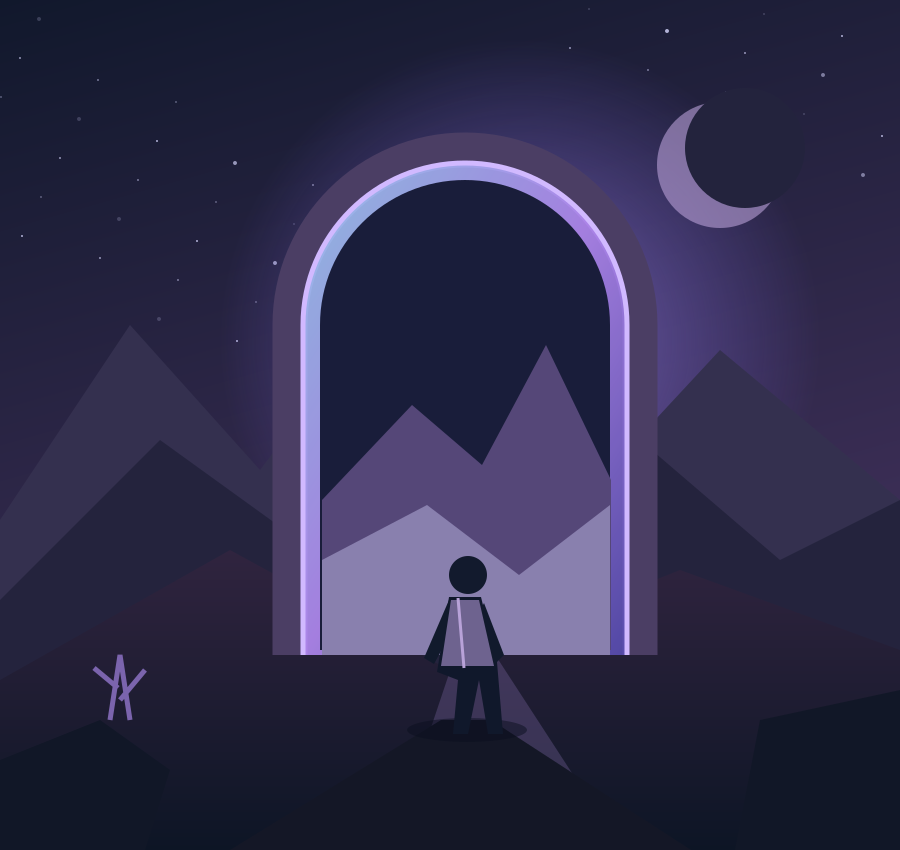

01 / NOTÍCIAS
O universo dos games não para
Atualizações e histórias da indústria, com contexto e fontes para você acompanhar.
Ler notíciasPARA QUEM VIVE O JOGO
Histórias que merecem um play. Análises para escolher melhor. Dicas para ir além. Bem-vindo ao seu universo gamer.

ESCOLHA SEU CAMINHO
Três jeitos de continuar a aventura.
01 / NOTÍCIAS
Atualizações e histórias da indústria, com contexto e fontes para você acompanhar.
Ler notícias
02 / REVIEWS
Conheça as propostas, os pontos fortes e os desafios de jogos que valem sua atenção.
Explorar reviews
03 / DICAS
Do primeiro mapa às configurações: hábitos práticos para aproveitar mais cada sessão.
Ver dicasNOSSO PONTO DE ENCONTRO
O CHECKPOINT existe para aproximar pessoas dos jogos. Aqui, curiosidade vale mais que ranking: explicamos o que muda, discutimos escolhas de design e compartilhamos caminhos para jogar no seu ritmo.